I've been writing for a long time. Long enough to know that the gap between finishing a book and putting it in someone's hands — a real person, standing right in front of you — is wider than it looks. On Sunday, May 31st, that gap closed a little. For two hours at Infinity Books in Asakusa, I got to do something I've wanted to do for years: sit across from readers, sign books, and talk about the stories I've spent years building.
It was a small event. Twenty people, maybe, in a shop that fits that number perfectly. And it was exactly right.
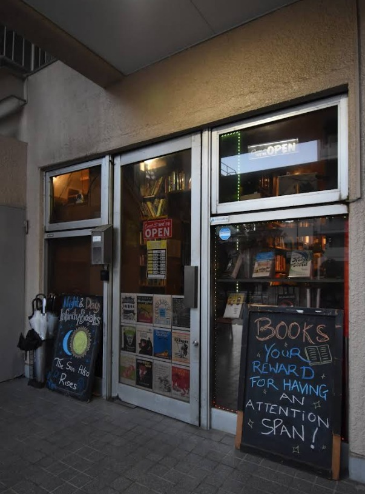
Getting There
Infinity Books sits in a quiet residential pocket of Asakusa, a short walk from Honjo Azumabashi Station on the Toei Asakusa Line. It's the kind of neighbourhood that feels unhurried — wide brick sidewalks, the occasional cyclist, the hum of the city just far enough away. You take Exit A1, turn right, and follow the road until the Infinity Books sandwich board appears outside a low building. Easy to miss if you're not looking. Worth looking for.
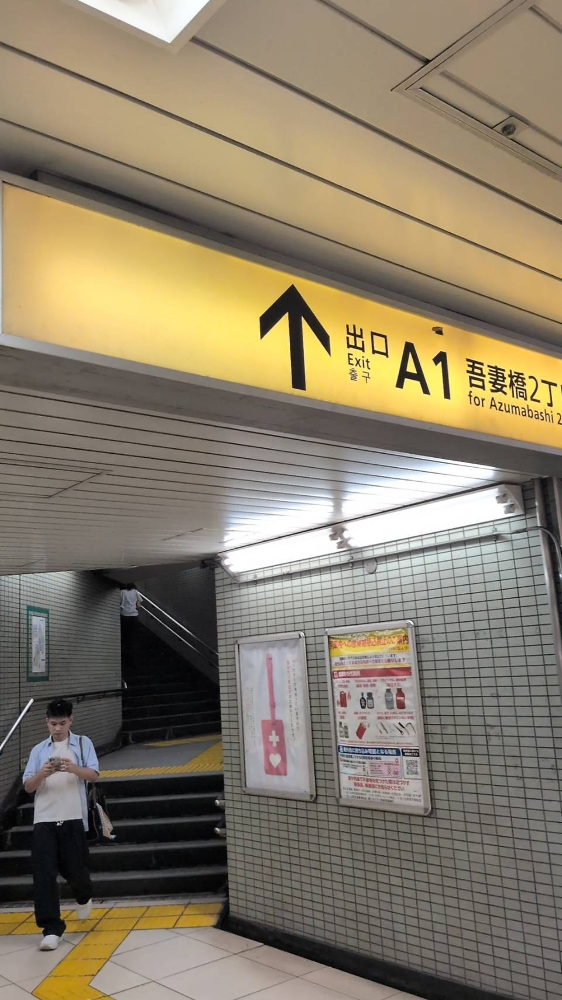
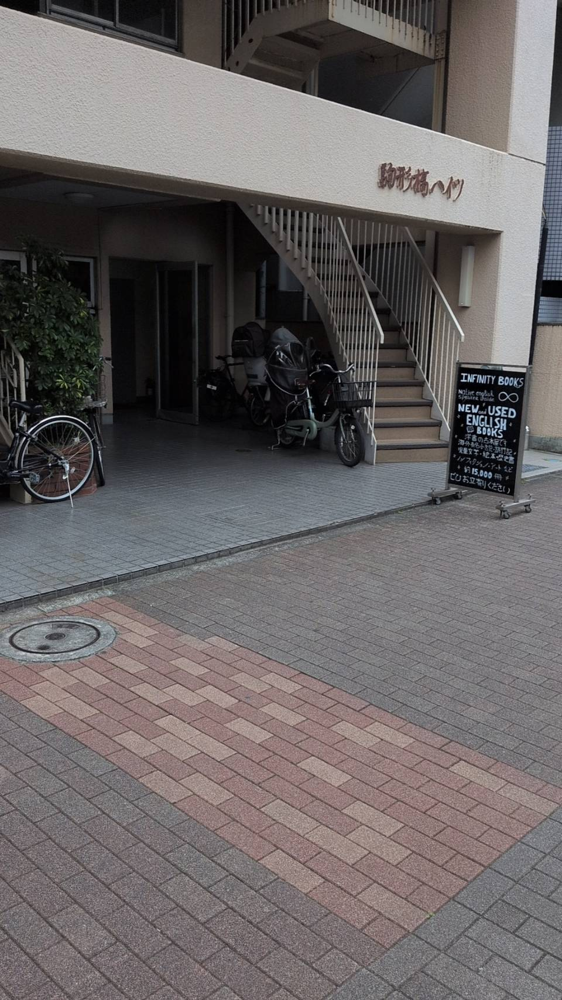
The Shop
If you've never been to Infinity Books, I'll try to describe it: floor-to-ceiling shelves of English-language books, a warm wooden bar counter with high stools, a Yorkshire Tea banner on the wall, a tablet for searching the catalogue, and — depending on the time of day and how crowded it is — a large orange cat named Oska folded somewhere into the shelves.
Oska was a stray. The shop took him in, and for a while he wanted nothing to do with the people who filled it. Gradually, on his own terms, he came around. He'll tolerate you now, maybe even acknowledge you, as long as things stay calm. When the room gets busy, he disappears into the shelves and watches from a distance. I respect that about him.
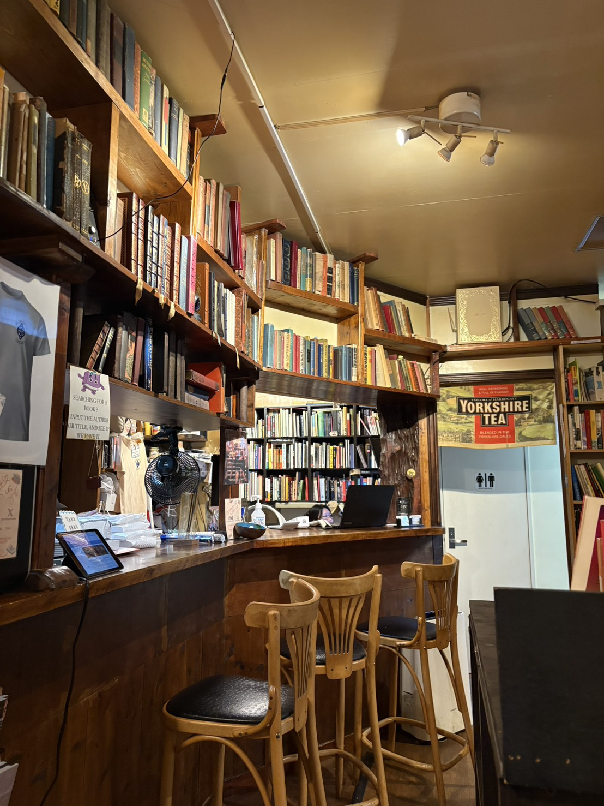
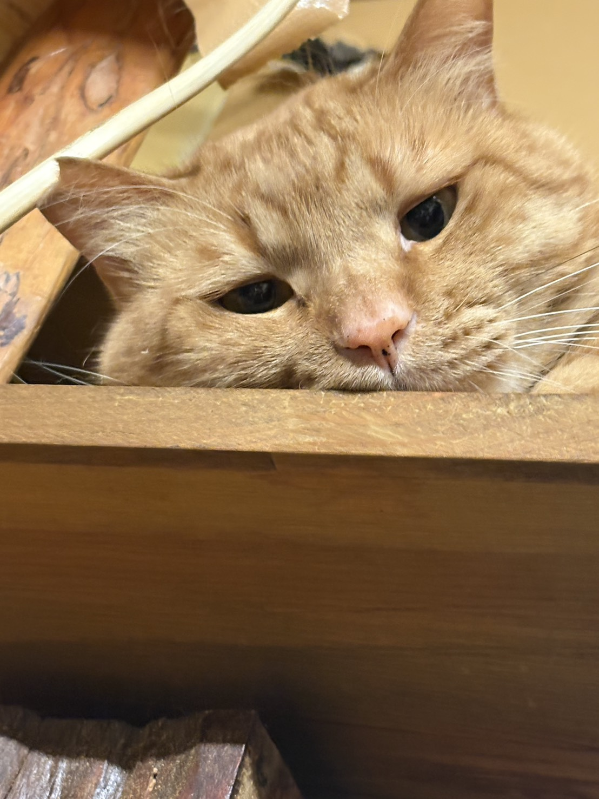
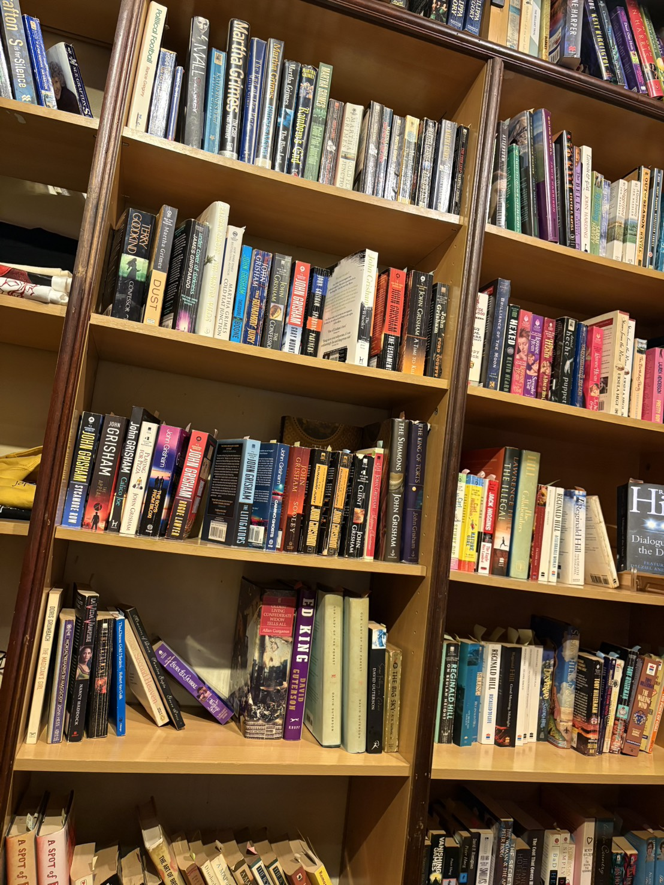
The Setup
I spent the day before the event doing a trial run at home — staging the table, testing the candles and fairy lights, arranging the bookmarks and signage. There's something both silly and necessary about that kind of rehearsal. You want to walk in on the day feeling settled, not scrambling.
The actual table came together well. Both books stacked, pricing signs up, the bookmark display out front, and a framed event poster in the middle. Behind it all, the guitars and instruments that live in that corner of the shop. I hadn't planned for them to be in the background, but they ended up being a perfect frame.
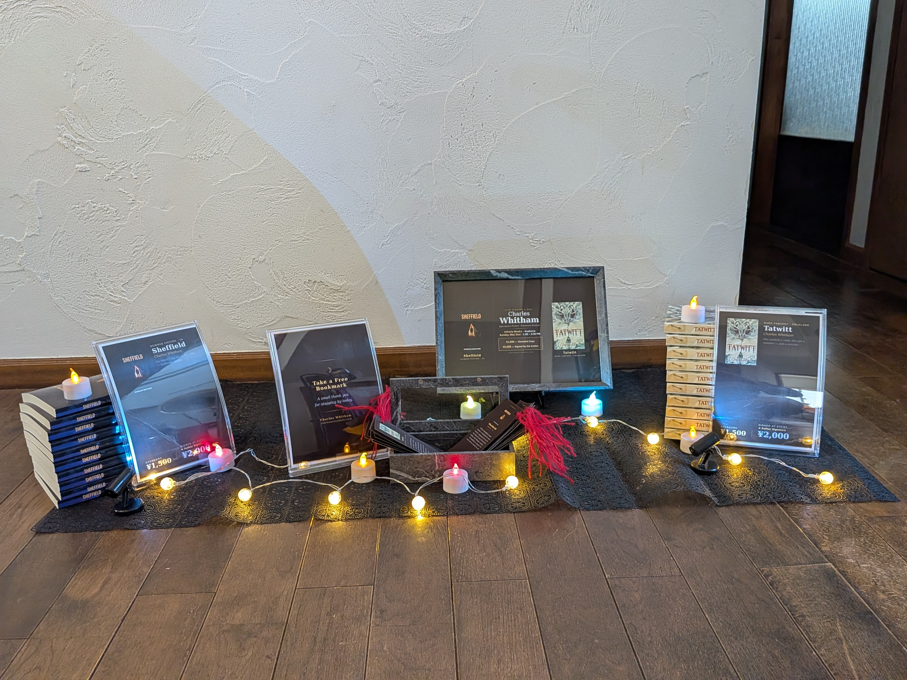
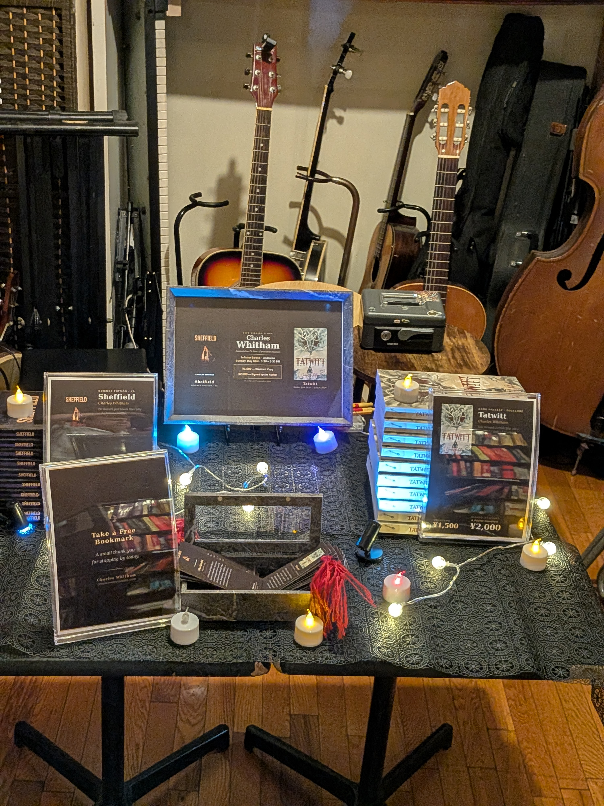
The shop had also prepared a beautiful display table near the entrance — both books on wooden easels, alongside the event flyer. Seeing your work treated that way, set out with care in a real bookshop, doesn't get old.
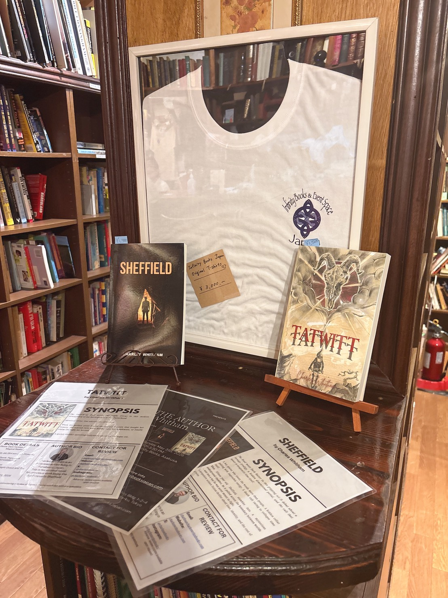
The Afternoon
About twenty people came through over the two hours. Some had found the event through the store, some through the website, some through word of mouth. There were conversations about the books, about writing in Japan, about what it means to publish independently. People picked up both Sheffield and Tatwitt. Some picked up both.
My son Christian came. He's a good sport about his father's author events, and I was glad he was there.
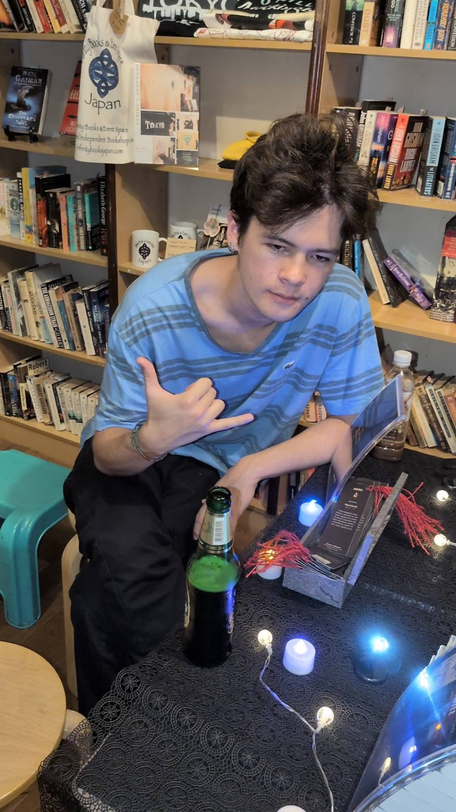
Two of the readers who came were both named Masako — which I didn't know until they were standing together at the table, each holding one of my books. One had Tatwitt, one had Sheffield. They hadn't coordinated it. That kind of moment is why you do events.
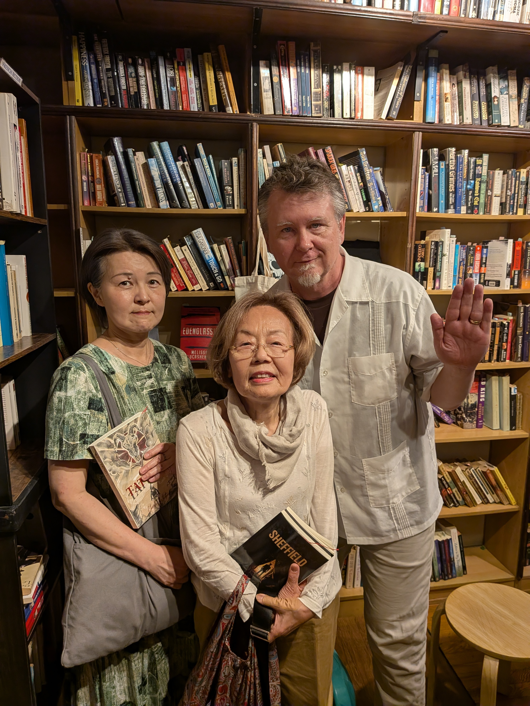
Signing books is a small ritual, but it matters. You write a name, a few words, your signature — and the book becomes slightly different from every other copy. That particular book belongs to that particular person now. I signed a copy of Tatwitt at the bar counter, bookshelves rising behind us, and thought: this is what it's supposed to look like.
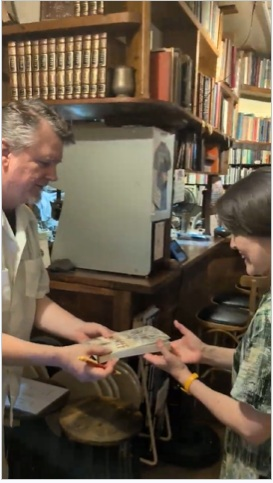
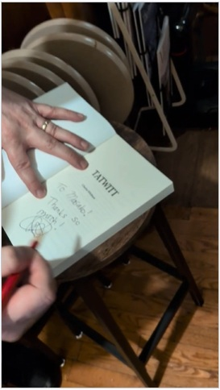
After
When the event wrapped, my wife Mayumi and I walked to Erick South for biryani — the kind of meal that earns its own paragraph. Then later, drinks at Thomas Bar Edison + Music in the neighbourhood, where a DJ was spinning under blue neon and the night felt like a proper ending to a good day.
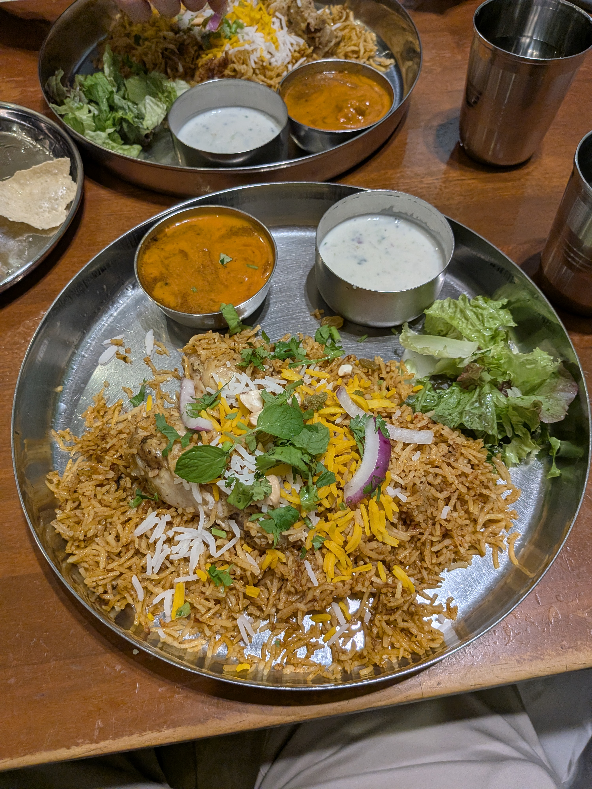

Thank You
To everyone who came out on May 31st — thank you. To the team at Infinity Books for hosting so warmly, for the display table, for Oska's reluctant but genuine hospitality — thank you. This was the first, and there will be more.
If you missed it and you're in Tokyo, Infinity Books is worth a visit any day of the week. You can find them near Honjo Azumabashi Station, Asakusa, Sumida-ku. They carry new and used English-language books and they know what they're doing.
Sheffield and Tatwitt are both available on Amazon. If you'd like a signed copy, get in touch through the contact form — I'm happy to arrange it.